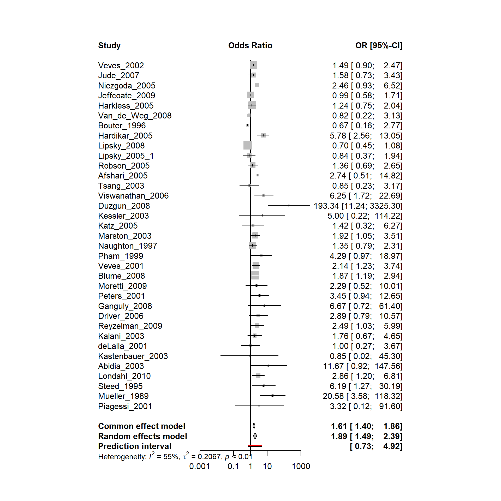
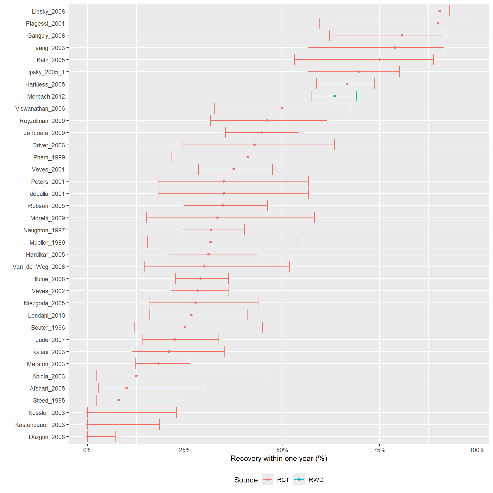
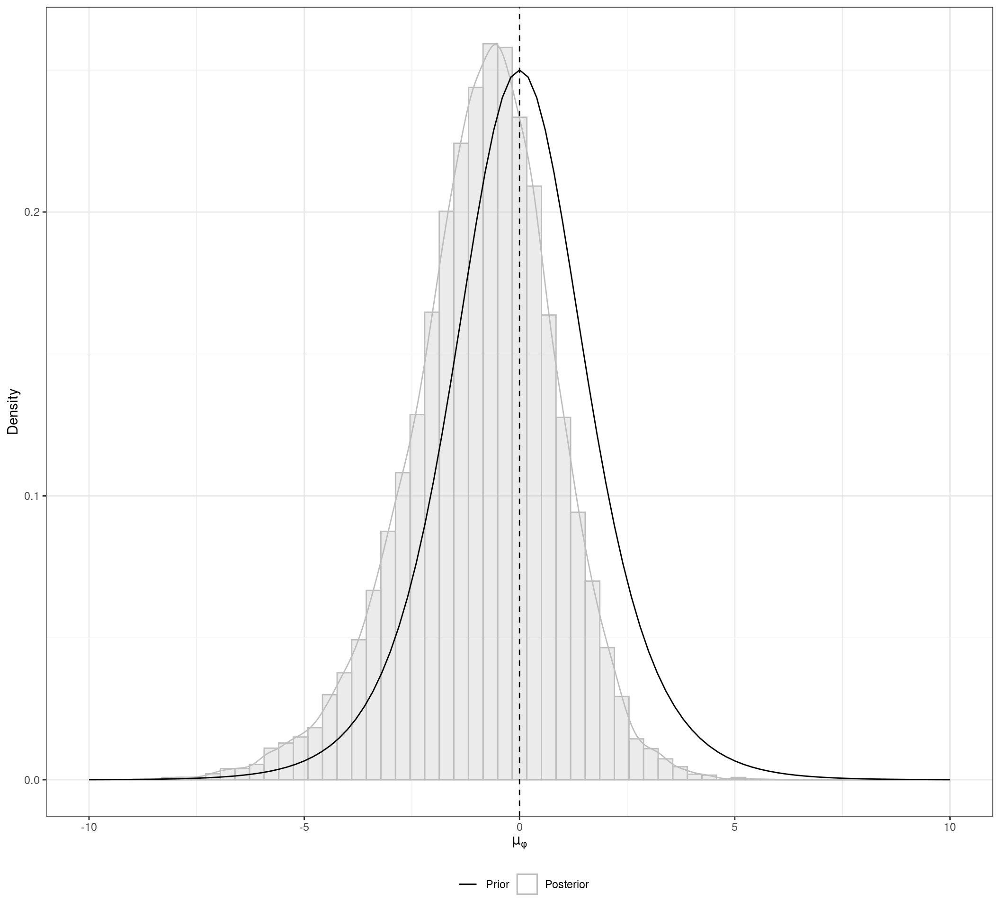
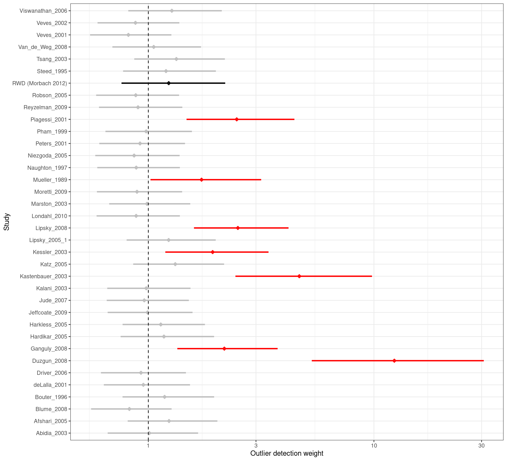

library(dplyr)
library(jarbes)
library(meta)
data("healing")
results.ADJ <- metabin(event.c = y_c, n.c = n_c,
event.e = y_t, n.e = n_t,
studlab = Study, data = healing,
sm = "OR",
prediction = TRUE)7 Individual Participant Data Meta-analysis of clinical trials and real-world data
Thomas Debray ![]()
7.1 Introduction
7.2 Hierarchical Meta-Regression
We illustrate the implementation of hierarchical meta-regression using an example that involves the following data sources:
- Aggregate data from 35 randomized trials investigating the efficacy of adjunctive treatments in managing diabetic foot problems compared with routine care
- Individual participant data from a prospective cohort study investigating patient and limb survival in patients with diabetic foot ulcers
7.2.1 Aggregate data
We first retrieve the randomized evidence and summarize the treatment effect estimates using a random effects meta-analysis:
The corresponding forest plot is depicted below. The endpoint is healing without amputations within a period less than or equal to 1 year.

The random effects meta-analysis yielded a pooled odds ratio of 1.90. However, substantial between-study heterogeneity was found, with \(\tau\) = 0.46.
7.2.2 Individual participant data
Subsequently, we retrieve the individual participant data:
data("healingipd")
IPD <- healingipd %>% dplyr::select(healing.without.amp, PAD, neuropathy,
first.ever.lesion, no.continuous.care,
male, diab.typ2, insulin, HOCHD,
HOS, CRF, dialysis, DNOAP, smoking.ever,
diabdur, wagner.class)Briefly, these IPD were obtained from a prospective cohort study enrolling consecutive patients with diabetic foot ulcers (DFUs) and without previous major amputation in a single diabetes center between June 1998 and December 1999 (Morbach et al. 2012). The baseline characteristics of the study population are summarized below:
| Healing without amputation (N=165) |
No healing without amputation (N=95) |
Overall (N=260) |
|
|---|---|---|---|
| Age (years) | |||
| Mean (SD) | 69.1 (10.9) | 68.5 (11.0) | 68.9 (10.9) |
| Median [Min, Max] | 70.0 [25.0, 90.0] | 69.0 [36.0, 91.0] | 70.0 [25.0, 91.0] |
| Diabetes duration (years) | |||
| Mean (SD) | 15.9 (10.3) | 15.9 (11.2) | 15.9 (10.6) |
| Median [Min, Max] | 14.0 [1.00, 53.0] | 14.0 [0, 50.0] | 14.0 [0, 53.0] |
| Sex | |||
| Female | 71 (43.0%) | 35 (36.8%) | 106 (40.8%) |
| Male | 94 (57.0%) | 60 (63.2%) | 154 (59.2%) |
| Ever smoker | |||
| Yes | 97 (58.8%) | 57 (60.0%) | 154 (59.2%) |
| No | 68 (41.2%) | 38 (40.0%) | 106 (40.8%) |
| Diabetes type 2 | |||
| Yes | 150 (90.9%) | 79 (83.2%) | 229 (88.1%) |
| No | 15 (9.1%) | 16 (16.8%) | 31 (11.9%) |
| Peripheral arterial disease | |||
| Yes | 82 (49.7%) | 66 (69.5%) | 148 (56.9%) |
| No | 83 (50.3%) | 29 (30.5%) | 112 (43.1%) |
| Neuropathy | |||
| Yes | 144 (87.3%) | 80 (84.2%) | 224 (86.2%) |
| No | 21 (12.7%) | 15 (15.8%) | 36 (13.8%) |
| First ever lesion | |||
| Yes | 70 (42.4%) | 44 (46.3%) | 114 (43.8%) |
| No | 95 (57.6%) | 51 (53.7%) | 146 (56.2%) |
| No continuous care | |||
| Yes | 115 (69.7%) | 62 (65.3%) | 177 (68.1%) |
| No | 50 (30.3%) | 33 (34.7%) | 83 (31.9%) |
| Insulin dependent | |||
| Yes | 109 (66.1%) | 65 (68.4%) | 174 (66.9%) |
| No | 56 (33.9%) | 30 (31.6%) | 86 (33.1%) |
| History of coronary events (CHD) | |||
| Yes | 31 (18.8%) | 21 (22.1%) | 52 (20.0%) |
| No | 134 (81.2%) | 74 (77.9%) | 208 (80.0%) |
| History of stroke | |||
| Yes | 36 (21.8%) | 19 (20.0%) | 55 (21.2%) |
| No | 129 (78.2%) | 76 (80.0%) | 205 (78.8%) |
| Charcot foot syndrome | |||
| Yes | 28 (17.0%) | 24 (25.3%) | 52 (20.0%) |
| No | 137 (83.0%) | 71 (74.7%) | 208 (80.0%) |
| Dialysis | |||
| Yes | 3 (1.8%) | 6 (6.3%) | 9 (3.5%) |
| No | 162 (98.2%) | 89 (93.7%) | 251 (96.5%) |
| DNOAP | |||
| Yes | 19 (11.5%) | 10 (10.5%) | 29 (11.2%) |
| No | 146 (88.5%) | 85 (89.5%) | 231 (88.8%) |
| Wagner score | |||
| 1-2 | 115 (69.7%) | 27 (28.4%) | 142 (54.6%) |
| 3-4-5 | 50 (30.3%) | 68 (71.6%) | 118 (45.4%) |
As depicted above, IPD are available from 260 patients. Some of these patients have similar characteristics to those enrolled in the randomized trials. However, other patients have comorbidities, where one or more risk factors prevent them to participate in the RCTs due to ethical reasons. For example, 118 patients have severe ulcer lesions (Wagner score 3 to 5), and 77 patients suffer from severe ulcer lesions and peripheral arterial disease (PAD). The question is: Can we generalize the benefit of adjuvant therapies observed in the RCTs to the subgroups of patients encountered in clinical practice?
7.2.3 Hierarchical metaregression
We first investigate the event rate of patients receiving routine care:

The forest plot above indicates that the baseline risk in the observational study from Morbach et al. is much higher than most trials.
We fitted an HMR model to the available RWD and published AD:
set.seed(2022)
AD <- healing %>% dplyr::select(yc = y_c, nc = n_c,
yt = y_t, nt = n_t, Study = Study)
mx2 <- hmr(data = AD, # Published aggregate data
two.by.two = FALSE, #
dataIPD = IPD, # Data frame of the IPD
re = "sm", # Random effects model: "sm" scale mixtures
link = "logit", # Link function of the random effects
sd.mu.1 = 1, # Scale parameter for the prior of mu.1
sd.mu.2 = 1, # Scale parameter for the prior of mu.2
sd.mu.phi = 1, # Scale parameter for the prior of mu.phi
sigma.1.upper = 5, # Upper bound of the prior of sigma.1
sigma.2.upper = 5, # Upper bound of the prior of sigma.2
sigma.beta.upper = 5, # Upper bound of the prior of sigma.beta
sd.Fisher.rho = 1.25, # Scale parameter for the prior of rho
df.estimate = TRUE, # If TRUE the degrees of freedom are estimated
df.lower = 3, # Lower bound of the df's prior
df.upper = 10, # Upper bound of the df's prior
nr.chains = 2, # Number of MCMC chains
nr.iterations = 10000, # Total number of iterations
nr.adapt = 1000, # Number of iteration for burnin
nr.thin = 1) # Thinning rateWe start our analysis by visualizing the conflict of evidence between the different types of data and study types. The figure below depicts the posterior distribution of \(\mu_{\phi}\), which is the mean bias of the IPD-NRS compared to the AD-RCTs control groups. The posterior distribution has a substantial probability mass below zero, which indicates that in average the IPD-NRS patients present a better prognoses than the AD-RCTs control groups. That means that taking the IPD-NRS results at face value would be misleading if we aim to combine them with a meta-analysis of AD-RCTs.

The figure below presents the posterior distribution of the weights \(w_{i}\) for each study included in the HMR. These posteriors are summarized using a forest plot, where posterior intervals substantially greater than one indicate outliers. One important aspect of the HMR is that those outliers are automatically down-weighted in the analysis.

Version info
This chapter was rendered using the following version of R and its packages:
R version 4.2.3 (2023-03-15)
Platform: x86_64-pc-linux-gnu (64-bit)
Running under: Ubuntu 22.04.4 LTS
Matrix products: default
BLAS: /usr/lib/x86_64-linux-gnu/openblas-pthread/libblas.so.3
LAPACK: /usr/lib/x86_64-linux-gnu/openblas-pthread/libopenblasp-r0.3.20.so
locale:
[1] LC_CTYPE=C.UTF-8 LC_NUMERIC=C LC_TIME=C.UTF-8
[4] LC_COLLATE=C.UTF-8 LC_MONETARY=C.UTF-8 LC_MESSAGES=C.UTF-8
[7] LC_PAPER=C.UTF-8 LC_NAME=C LC_ADDRESS=C
[10] LC_TELEPHONE=C LC_MEASUREMENT=C.UTF-8 LC_IDENTIFICATION=C
attached base packages:
[1] stats graphics grDevices utils datasets methods base
other attached packages:
[1] meta_7.0-0 metadat_1.2-0 jarbes_2.0.0 dplyr_1.1.4
[5] ggplot2_3.5.0 table1_1.4.3 kableExtra_1.4.0
loaded via a namespace (and not attached):
[1] tidyr_1.3.1 sfsmisc_1.1-17 jsonlite_1.8.8
[4] viridisLite_0.4.2 splines_4.2.3 Formula_1.2-5
[7] shiny_1.8.0 metafor_4.4-0 yaml_2.3.8
[10] numDeriv_2016.8-1.1 R2WinBUGS_2.1-22.1 pillar_1.9.0
[13] lattice_0.20-45 glue_1.7.0 digest_0.6.35
[16] promises_1.2.1 minqa_1.2.6 colorspace_2.1-0
[19] R2jags_0.7-1.1 mcmcplots_0.4.3 htmltools_0.5.7
[22] httpuv_1.6.14 Matrix_1.6-5 pkgconfig_2.0.3
[25] purrr_1.0.2 xtable_1.8-4 scales_1.3.0
[28] svglite_2.1.3 rjags_4-15 later_1.3.2
[31] tzdb_0.4.0 lme4_1.1-35.1 tibble_3.2.1
[34] farver_2.1.1 generics_0.1.3 ellipsis_0.3.2
[37] withr_3.0.0 cli_3.6.2 magrittr_2.0.3
[40] mime_0.12 evaluate_0.23 fansi_1.0.6
[43] nlme_3.1-162 MASS_7.3-58.2 xml2_1.3.6
[46] tools_4.2.3 hms_1.1.3 lifecycle_1.0.4
[49] stringr_1.5.1 munsell_0.5.0 compiler_4.2.3
[52] systemfonts_1.0.6 rlang_1.1.3 grid_4.2.3
[55] nloptr_2.0.3 rstudioapi_0.15.0 CompQuadForm_1.4.3
[58] htmlwidgets_1.6.4 miniUI_0.1.1.1 labeling_0.4.3
[61] rmarkdown_2.26 boot_1.3-28.1 gtable_0.3.4
[64] codetools_0.2-19 abind_1.4-5 R6_2.5.1
[67] gridExtra_2.3 knitr_1.45 denstrip_1.5.4
[70] fastmap_1.1.1 utf8_1.2.4 ggExtra_0.10.1
[73] mathjaxr_1.6-0 readr_2.1.5 stringi_1.8.3
[76] parallel_4.2.3 Rcpp_1.0.12 vctrs_0.6.5
[79] tidyselect_1.2.1 xfun_0.42 coda_0.19-4.1 References
Morbach, Stephan, Heike Furchert, Ute Gröblinghoff, Heribert Hoffmeier, Kerstin Kersten, Gerd-Thomas Klauke, Ulrike Klemp, et al. 2012. “Long-Term Prognosis of Diabetic Foot Patients and Their Limbs.” Diabetes Care 35 (10): 2021–27. https://doi.org/10.2337/dc12-0200.